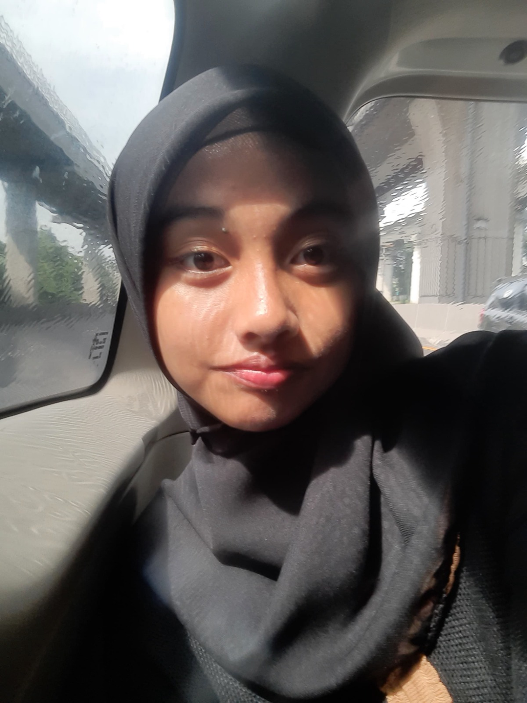

“Mood”-suasana hati. Seperti cuaca pribadi yang selalu melayang di atas kepala kita. Bisa cerah ceria, bisa juga mendung mendalam. “Mail”—sebuah pesan yang melakukan perjalanan. Dari satu titik ke titik lain. Ada niat, ada arah, ada tujuan. Ketika dua kata ini disatukan, lahirlah MoodMail—sebuah ruang digital yang terasa seperti kantor pos emosi. Tempat di mana kamu bisa “mengemas” perasaanmu—entah itu senang yang meletup-letup, sedih yang diam-diam menyayat, atau rindu yang tak tahu harus ke mana—lalu kamu drop dengan lembut ke kotak surat virtual. Di MoodMail, setiap kata bukan cuma teks. Ia adalah cuplikan hati. Setiap pesan bukan sekadar notifikasi. Ia adalah sapaan emosional. Setiap momen yang kamu kirim, mendarat tidak hanya di layar, tapi juga—semoga—di hati penerimanya. Karena kadang, cara terbaik untuk bilang “aku mikirin kamu” bukan lewat status atau story. Tapi lewat sebuah pesan kecil yang penuh rasa. MoodMail bukan cuma platform. Ia adalah bahasa perasaan, dikirim dengan hati, diterima dengan hangat.
About Us

Web Programmer
Aulia Muthmainna
Web programmers are people who are responsible for creating and developing websites. They write code using languages such as HTML, CSS, and JavaScript to build the appearance and functionality of a site. In addition, they also ensure that the website is well-accessible, responsive on various devices, and safe from interference.

Application Programmer
Firyal Chalissa Asyla
Application programmers are people who create applications for computers or mobile devices. They are tasked with writing program code, building application features, and ensuring that applications run smoothly according to user needs. In addition, they also perform testing and repair (debugging) if there are errors in the program.

Content Writer
Satria Bintang Jarel A.
Content writers are people who write content in the form of articles, captions, product descriptions, or website content. They are tasked with composing writing that is interesting, easy to understand, and in accordance with the target reader. In addition, they can also apply SEO techniques so that writing is easier to find in search engines.
Graphic Designer
Alliya Puti Humaira
Graphic designers are people who create visual designs for various purposes, such as posters, logos, application displays, or social media. They use design software such as Photoshop or Illustrator to create works that are attractive, clear, and in accordance with the message they want to convey.